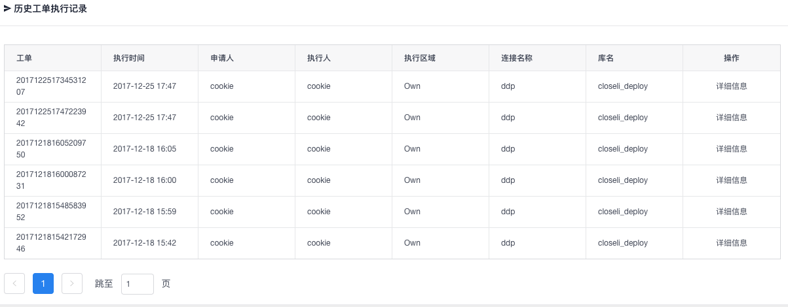

Dashboard
主要功能:
-
to-list 可作为一个简易版的记事板且各用户相互独立。对其他用户不可见
-
各项数据展示 全局数据针对所有用户展示
-
站内信(点击页面右上角铃铛图案) 提交，驳回，同意等信息默认发往站内信
-
个人中心(点击页面右上角用户名) 修改个人邮箱，修改个人密码，查看个人信息及申请权限
-
锁定账户，变换主题及全屏

注意事项:
to-list仅支持15个字的内容
我的工单
主要功能:
- 查看该账户下提交的工单信息
注意事项:
每条工单都拥有自己的详细信息。点击详细信息后可以查看该工单提交SQL的信息
同意状态的工单 可以点击详细信息后查看回滚语句并重新提交工单
驳回状态的工单 可以点击详细信息后重新编辑SQL语句并重新提交(更改表结构语句不可编辑)
审核状态的工单 点击详细信息后可以撤销工单
进行中的工单 不可进行任何操作
DDL
主要功能:
- 提供手动模式及生成模式:
-
手动模式可自由编写DDL语句并提供自动补全,语法高亮等功能（系统会自动过滤非DDL语句）
-
生成模式提供可视化界面不用编写DDL语句，可直接生成
生成模式-添加字段流程:
选择数据库 -> 在生成添加字段页面表单中填写相关字段信息后点击添加(此时并不会生成语句，如果想删除可直接在表格中删除) -> 点击生成 -> 点击提交工单 -> 确认工单无误后提交！
生成模式-修改或删除字段流程:
点击生成修改&删除字段 -> 选择相应字段修改并点击修改确认，或点击删除 删除改字段 ->
点击生成 -> 点击提交工单 -> 确认工单无误后提交！
注意事项:
生成模式能保证绝大多数的DDL语句的正确生成但并不能保证所有的DDL语句都正确生成(毕竟机器是死的人是活的)
对于手动模式来说，一般建议规范DDL语句写法。
索引修改
主要功能:
- 根据选择条件自动生成索引更改语句
添加&删除索引 与表结构修改类似
DML

主要功能:
- DML检测
- DML美化
- DML提交
- DML自动补全,语法高亮
注意事项:
为了确保提交SQL的准确及规范，提交按钮只有在点击检测后错误等级为0时才会激活。
只能提交DML语句,系统会自动过滤非DML语句
查询
主要功能:
- 提交查询工单
- 导出查询数据
- 自动补全,语法高亮
注意事项:
使用查询功能需向管理员提出工单申请，管理员同意后可直接进入查询页面。
对于每一次的查询都是有时限的。时间一过将无法查询必须重新申请工单
时限开始时间为管理员同意该查询工单开始计算。
在时限框内如输入非数字字符则一律自动转化为1分钟
点击树形目录上的表名可直接显示该表的表结构信息。
数据库字典
主要功能:
- 数据字典查阅及修改
- 导出数据字典(.docx文档)
注意事项:
数据字典生成之后只会保存在本地，所以任何对数据字典的操作都不会对线上数据产生影响
用户管理

主要功能:
-
添加，编辑权限，删除用户信息
-
12种不同的独立权限选项
yearning权限划分图:
注意: yearning v1.1.2后采用工单提交的查询方式，所以查询权限已经取消。
Yearning采用多源权限策略。
由权限组及细分权限两大部分组成。
权限组分为admin,guest。 admin权限组导航栏所有页面可见,guest权限组无法可见管理相关页面
细分权限为上图中的11种独立权限。所有的权限相互独立，互不影响，可随意自由组合。
如: 某一个用户可以访问DML页面但只能访问test连接名，但是访问DDL页面可以访问test，testone这2个连接名，查询不准访问。诸如此类根据实际公司需要进行多样化配置
数据库管理
主要功能:
- 添加，编辑，删除数据库信息
注意事项:
机房选项为不可改！
钉钉推送处添加钉钉webhook可在工单提交，驳回或同意时发送自定义钉钉消息。
email及钉钉推送开关默认关闭 开启后将启用对应推送服务
字典生成可一键生成所选库下所有表的数据信息(数据将一次性存入本地数据库，之后不会经过线上数据库)
特别注意一键生成只能一次生效。如果线上又新加了改动则无法再次生成！必须自己手动进入数据库字典页面添加相关信息！
如果发生无法生成数据字典的情况，则较大可能为Yearning库与用来生成字典的目标库字符集不匹配而导致无法写入数据的问题。
如果生成后删除对应库的连接数据库。生成的数据字典不会删除，必须通过字典删除功能才能删除生成的数据字典数据。
审核
主要功能:
- 审核工单并执行
- 工单采取的是多线程异步执行的方式。所以就算关闭网页工单一样会执行。获得执行结果需手动点击刷新按钮获取数据
- 当提交的为ddl语句并且Inception开启osc时, 对应工单会出现osc进度查看按钮，点击后可查看osc进度及中止。
注意事项:
由于inceotion中止osc后没有删除目标库中pt产生的触发器。所以中止后须自己手动删除目标数据库有关pt的触发器
虽然在提交工单时已经采取了一定的措施避免了错误的SQL提交，但在选择同意执行前仍应该再次进行检测，确认无误后再执行。
权限审核
主要功能:
- 权限申请工单审核
注意事项:
只有超级管理员才可访问(默认超级管理员为用户表id为1的用户)
查询审核
主要功能:
- 查询申请工单审核
查询记录
主要功能:
- 查看历史查询记录
执行记录

主要功能:
- 查看历史执行记录
注意事项:
点击详细后可以查看具体的语句执行信息。并且可以查看回滚语句并重新提交工单。
设置
主要功能:
- 设置平台动态配置项，可立即生效
注意事项:
只有超级管理员才可访问(默认超级管理员为用户表id为1的用户)